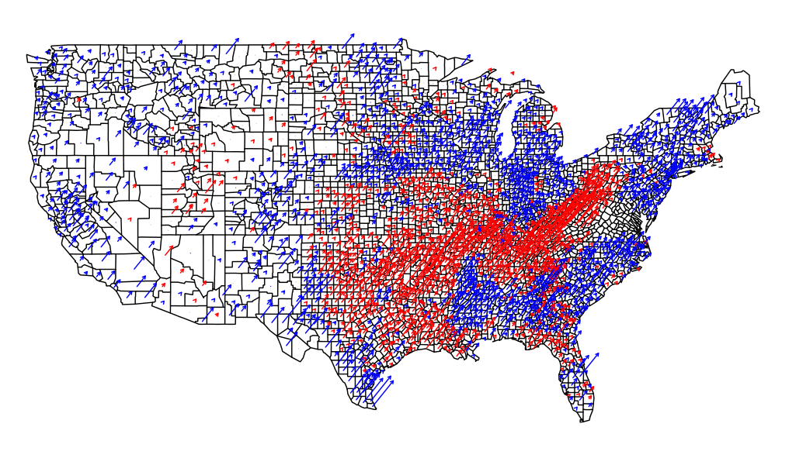
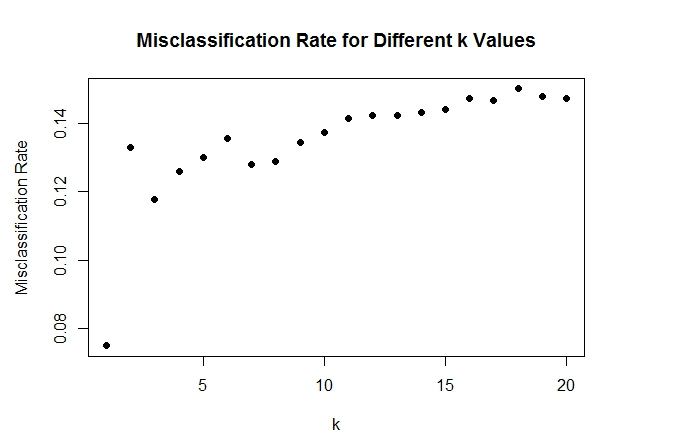

Election Plots
Jason Zhang, Jeremy Young, Mike Tran, Patrick Lin

Party vote shift from '04 to '12 election. Arrows signify an increase in voting percentage from '04 to '12, with red corresponding to Republicans and blue to Democrats.

KNN error rates for various values of k